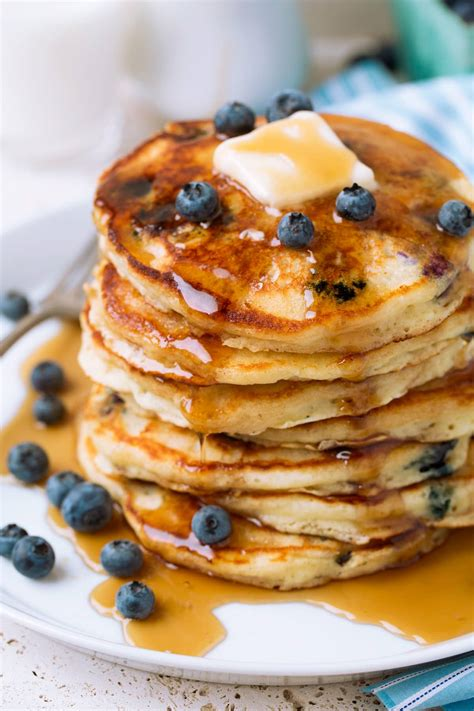

Home
Blueberry Pancakes

Light and fluffy blueberry pancakes.
Ingredients
- flour
- milk
- eggs
- blueberries
Directions
- Whisk together milk and eggs. Pour into flour. Stir until moistened.
- Spoon 1/4 cupfuls of batter onto hot skillet. Sprinkle with blueberries.
- Cook until bubbles appear on surface. Flip and cook until edge is golden.